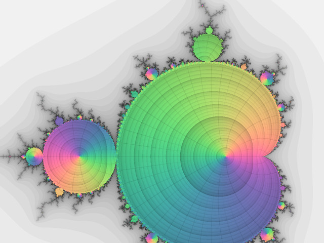
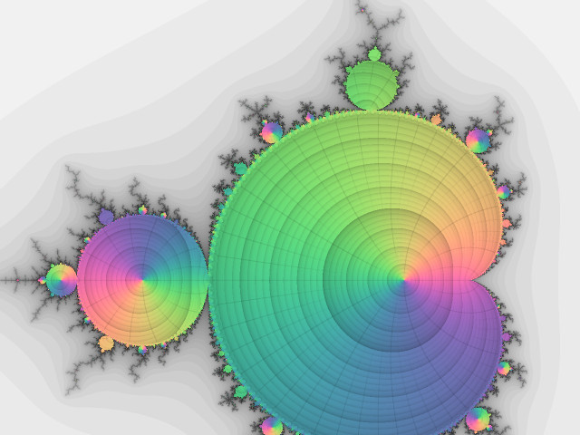
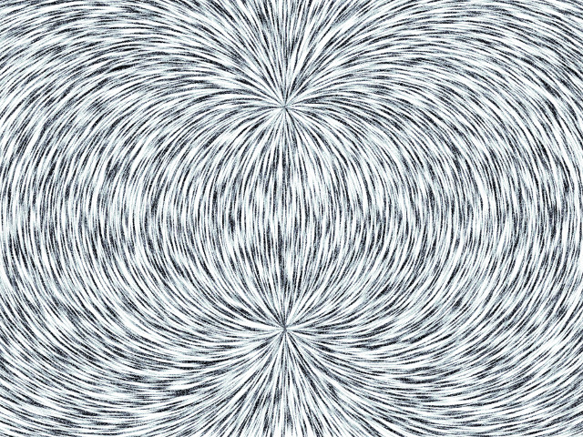
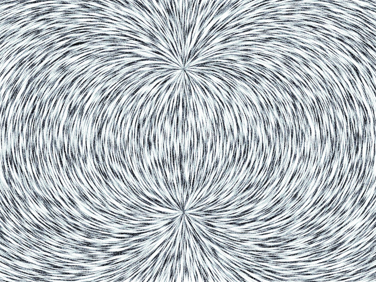
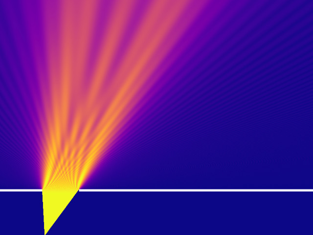
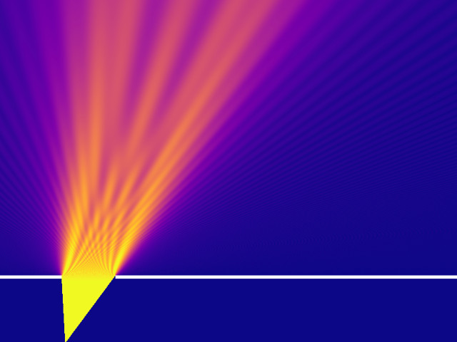
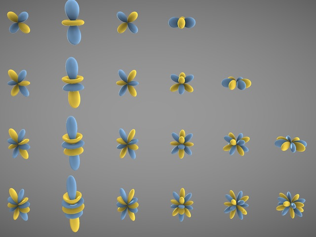
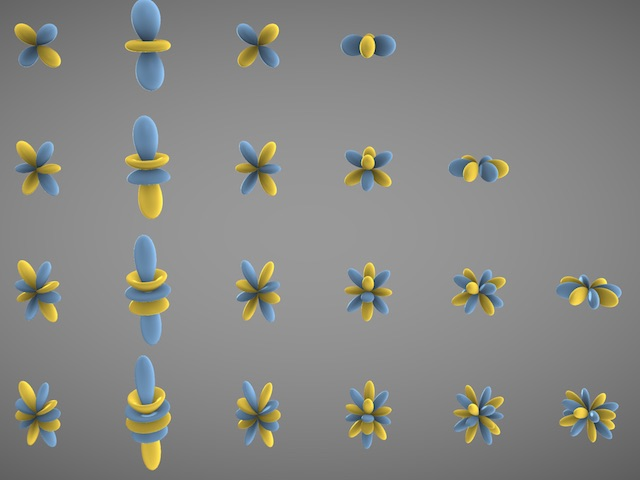

Sketches
A set of experiments and explorations, mostly using the regl WebGL library, some computed on the GPU and some on the CPU. The source for all content and projects on this site can be found here.
Comments? Questions? Let me know @rickyreusser.
 Ikeda MapA discrete chaotic attractor
Ikeda MapA discrete chaotic attractor Hertzsprung-Russell DiagramStar magnitudes and temperaturesMandelbrotDrawing the first iterations of the Mandelbrot set as a complex function
Hertzsprung-Russell DiagramStar magnitudes and temperaturesMandelbrotDrawing the first iterations of the Mandelbrot set as a complex function PulsarSignals and noise (no physical significance)
PulsarSignals and noise (no physical significance) Multiscale Turing PatternsMultiscale turing patterns, as described by Jonathan McCabeMagnetJust a magnetic field
Multiscale Turing PatternsMultiscale turing patterns, as described by Jonathan McCabeMagnetJust a magnetic field Potential FlowProcedural (almost) potential flow with curl noise
Potential FlowProcedural (almost) potential flow with curl noise Ueda AttractorUeda's chaotic nonlinear oscillatorSingle-slit diffractionDiffraction of a 1D wavefunction through a slit using Feynman's path integral approach
Ueda AttractorUeda's chaotic nonlinear oscillatorSingle-slit diffractionDiffraction of a 1D wavefunction through a slit using Feynman's path integral approach Fibonacci SphereFrom Martin Roberts' article about evenly distributed points on a sphere
Fibonacci SphereFrom Martin Roberts' article about evenly distributed points on a sphere Gray Scott Reaction DiffusionReacting species diffusing at different rates
Gray Scott Reaction DiffusionReacting species diffusing at different rates Rule 30Stephen Wolfram's 1D cellular automata
Rule 30Stephen Wolfram's 1D cellular automata Line Integral ConvolutionVisualizing vector fields with Line Integral Convolution (LIC)
Line Integral ConvolutionVisualizing vector fields with Line Integral Convolution (LIC) Rigid Point Cloud AlignmentAligning point clouds with the Iterative Closest Point methodSpherical HarmonicsJust a plot of the first few spherical harmonics
Rigid Point Cloud AlignmentAligning point clouds with the Iterative Closest Point methodSpherical HarmonicsJust a plot of the first few spherical harmonics Domain Coloring with Contour ScalingUsing OES_standard_derivatives to scale contours to the local gradient of a function
Domain Coloring with Contour ScalingUsing OES_standard_derivatives to scale contours to the local gradient of a function Flamm's ParaboloidScroll to build Flamm's Paraboloid
Flamm's ParaboloidScroll to build Flamm's Paraboloid Continuum GravityOne million particles interacting gravitationally via a Poisson equation solved on a 2D grid
Continuum GravityOne million particles interacting gravitationally via a Poisson equation solved on a 2D grid Kuramoto-SivashinskyIntegrating the 2D Kuramoto-Sivashinsky Equation, ∂u/∂t + ∇⁴u + ∇²u + ½ |∇u|² = 0
Kuramoto-SivashinskyIntegrating the 2D Kuramoto-Sivashinsky Equation, ∂u/∂t + ∇⁴u + ∇²u + ½ |∇u|² = 0 Karman-Trefftz AirfoilFlow over an airfoil, computed with the Karman-Trefftz conformal map and visualized on the GPU
Karman-Trefftz AirfoilFlow over an airfoil, computed with the Karman-Trefftz conformal map and visualized on the GPU Periodic Three-Body OrbitsPeriodic solutions of three bodies interacting via Newtonian gravity
Periodic Three-Body OrbitsPeriodic solutions of three bodies interacting via Newtonian gravity Hydrodynamic InstabilitiesThe Kelvin-Helmholtz and Rayleigh-Taylor hydrodynamic instabilities
Hydrodynamic InstabilitiesThe Kelvin-Helmholtz and Rayleigh-Taylor hydrodynamic instabilities Strange AttractorsStrange attractors on the GPU
Strange AttractorsStrange attractors on the GPU Schwarzschild TrajectoriesIntegrating particle geodesics in Schwarzschild spacetime (a black hole).
Schwarzschild TrajectoriesIntegrating particle geodesics in Schwarzschild spacetime (a black hole). Polynomial RootsRoots of a polynomial with random coefficients, plotted in the complex plane
Polynomial RootsRoots of a polynomial with random coefficients, plotted in the complex plane Umbilic TorusUmbilic Torus
Umbilic TorusUmbilic Torus Lamb Wave Dispersion RelationPlotting the the complex dispersion relation for elastodynamic plate waves; zeros represent valid modes
Lamb Wave Dispersion RelationPlotting the the complex dispersion relation for elastodynamic plate waves; zeros represent valid modes Fluid SimluationClassic semi-Lagrangian fluid simulation from Visual Simulation of Smoke
Fluid SimluationClassic semi-Lagrangian fluid simulation from Visual Simulation of Smoke ErosionAn ad-hoc particle-based terrain erosion algorithm, computed on the GPU
ErosionAn ad-hoc particle-based terrain erosion algorithm, computed on the GPU Smooth LifeConway's Game of Life, generalized to a continuum and solved on the GPU
Smooth LifeConway's Game of Life, generalized to a continuum and solved on the GPU Centripetal B-SplinesExperimenting with centripetal parameterization for B-splines
Centripetal B-SplinesExperimenting with centripetal parameterization for B-splines Logistic MapThe chaotic logistic map, computed and displayed on the GPU
Logistic MapThe chaotic logistic map, computed and displayed on the GPU Nosé-Hoover AttractorPlotting a strange attractor with 2D rectangles
Nosé-Hoover AttractorPlotting a strange attractor with 2D rectangles VortexA vortex, rendered as a single signed distance function
VortexA vortex, rendered as a single signed distance function K-means clusteringWIP refactoring of the kmpp npm module
K-means clusteringWIP refactoring of the kmpp npm module Double PendulumAccumulating long-term patterns in a chaotic double-pendulum
Double PendulumAccumulating long-term patterns in a chaotic double-pendulum